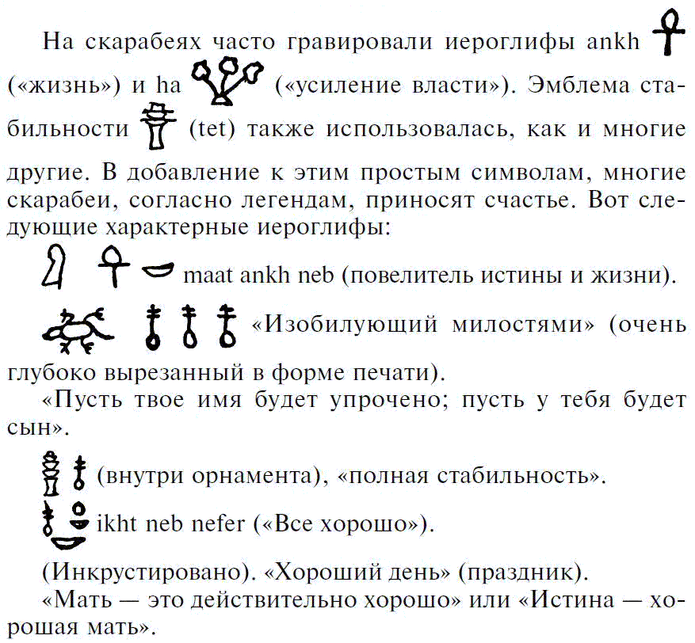
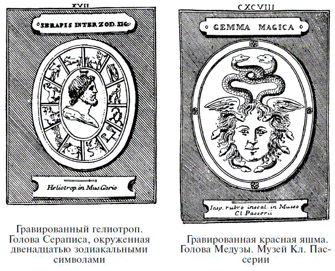
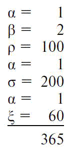
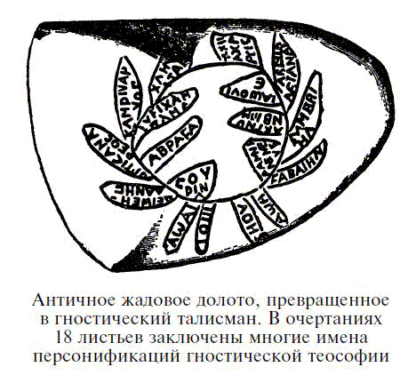
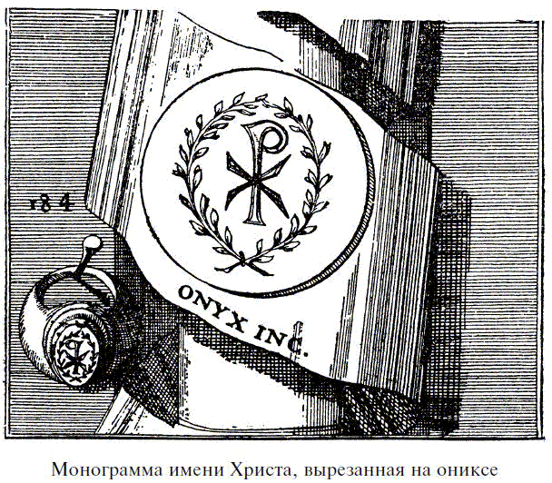
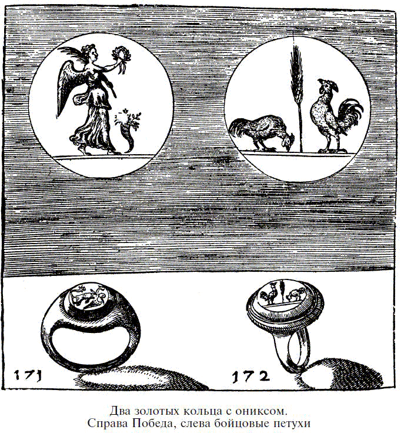

Талисманы из резных и гравированных камней

Считалось, что особые свойства драгоценных камней усиливались, если на них гравировались специальные символы: фигурки священного значения или особых качеств. Этот обычай предполагал достаточное развитие цивилизации, так как искусство гравировки драгоценных камней связано с рядом трудностей и требует высокого уровня художественных и технических навыков. Первые гравированные камни – вавилонские цилиндры и египетские скарабеи – служили вполне практическим целям и использовались как печати, но в большинстве случаев эти примитивные предметы тоже наделялись особыми свойствами и носились как талисманы.
Скарабей – украшение, очень высоко ценимое египтянами, – представляет собой изображение священного жука скарабея, типичного представителя семейства скарабеидов. Он обычно черного цвета, но иногда бывает с различными металлическими оттенками. Собрав комок навоза для откладывания яиц, это насекомое скатывает его задними лапками до тех пор, пока мягкая и бесформенная масса не затвердевает, становясь почти идеально круглой. Некий забавный символизм побудил египтян сделать этого жука эмблемой мира, отцовства и мужества. Круглый шарик, в котором сохранялись яйца, отложенные скарабеями, означал мир; так как египтяне считали всех скарабеев самцами, они соотносили с ним мужское начало и, соответственно, отцовство и мужчину. В то же время, наблюдая только взрослых особей – символ возрождения и перевоплощения, – древние египтяне даже не задумывались, что яйца, личинки или куколки этих жуков тоже имеют какое-то отношение к их развитию, поэтому скарабей был еще и символом бессмертия. Такая точка зрения была наиболее распространена, хотя вряд ли исследователям того времени, одним из наиболее образованных представителей египетского общества, было совершенно неизвестно истинное происхождение священного скарабея. Но в этом случае несложно найти символы бессмертия в стадиях его развития: личинка – смертная жизнь, куколка – переходный период в виде мумии, душа которой отлетает, чтобы пройти через подземный мир, и, наконец, взрослая особь – возрождение к вечной жизни, для которой очищенная и совершенная душа снова оживает в уникальной и измененной форме.

Скарабеи, для египтян означавшие восходящее солнце, а следовательно, обновление жизни после смерти, были скопированы финикийцами с египетских типов и модифицированы различными способами, чтобы приспособить к религиозным представлениям различных земель, которым они поставляли произведения своего искусства. Должно быть, многое из первоначального значения этого символа пропало; вероятно, во многих случаях мало что осталось, кроме веры, что амулет этой формы приносит своему владельцу счастье и охраняет его от зла.
Погребальные скарабеи часто делали из яшмы, аметиста, ляпис-лазури, рубина или карнеола с выгравированными на основании именами богов, царей, жрецов, чиновников или частных лиц; иногда гравировались монограммы или девизы в виде цветов. Иногда основанию скарабея придавали форму сердца, а иногда скарабей сочетался с „уджатом“, или глазом Гора, а также с лягушкой, олицетворяющей обновление жизни. Вставив в кольца, их надевали на палец покойному или же, завернув в льняные тряпочки, клали на его сердце как символ солнца, каждый день восходящего к обновленной жизни. Они служили символами воскрешения тела.
Некоторые египетские скарабеи, очевидно, использовались в качестве талисманных подарков друг другу. Два таких скарабея находятся в коллекции художественного Метрополитен-музея в Нью-Йорке. На одном написано: „Пусть Ра принесет тебе счастье в новом году“, а на другом: „Пусть твое имя будет упрочено; пусть у тебя будет сын“ и „Пусть твой дом расцветает с каждым днем“. Любопытно, что современное приветствие „С Новым годом!“ существовало в Египте, вероятно, три тысячи лет назад.
На египетских надписанных скарабеях, используемых как печати, были выгравированы многие символы, которым приписывались талисманные свойства. Урей,[55] символизирующий смерть, иногда ассоциировался с узлом, так называемым символом ankh, означающим жизнь. Часто появляется иероглиф nub – „золото“; этот символ на ожерелье с подвесками-бусинами служит доказательством того, что золотые бусы, должно быть, были знакомы египтянам задолго до того, как был применен иероглиф, означающий золото. Все это бесчисленное множество символических фигур служило для того, чтобы наделить печать священным и благоприятным качеством, которое передавалось владельцу; даже штамп, сделанный этой печатью, обретал волшебную силу. Немногие из нас могли бы поверить в силу, присущую какому-либо символу, но предполагаемая сила символа сегодня так же реальна, как и всегда. Любой предмет, пробуждающий высокие мысли или служащий для того, чтобы подчеркивать глубокое убеждение, на самом деле обладает некоторым магическим свойством, так как способен вызвать эффект, совершенно несоразмерный с его истинной ценностью или материальными свойствами.
Многие существующие скарабеи и печати сделаны из искусственной васильковой ляпис-лазури, которую научились делать в Египте. Это был щелочной силикат, ярко-синий от карбоната меди. Нередко использовалось замечательное прозрачное или непрозрачное стекло. В огромных количествах использовалась для изготовления скарабеев и цилиндров в Египте и Ассирии настоящая ляпис-лазурь, а в качестве драгоценного камня она употреблялась и во времена Римской империи. Яркий пример использования ляпис-лазури в Древнем Египте – образ Истины (Ma), подвешенный на золотой цепочке, который египетский верховный судья носил на шее.
Говорят, во времена римлян некоторые легионеры носили кольца со скарабеями, поскольку верили, будто эта фигурка наделяет своего владельца большим мужеством и силой.
Египетские амулеты самого раннего периода, XII династии (примерно 2000 г. до н. э.), значительно отличаются от тех, что делали и носили после начала XVIII династии (1580 г. до н. э.). Амулеты более раннего периода немногочисленны и представлены лишь небольшим количеством излюбленных фигурок или голов животных, преимущественно из карнеола, берилла и аметиста. После окончания так называемого периода Хиксос, эпохи, во время которой Египтом правили иностранные цари, наступило блестящее оживление и развитие египетской цивилизации, характеризующее XVIII династию. Некоторые старые формы были преданы забвению, а другие сильно видоизменились и приобрели иное значение. Фигурки животных утратили большую часть фетишистских свойств и стали все больше и больше почитаться как изображения разнообразных божеств, которым поклонялись в этот поздний период. Постепенно амулеты с изображениями животных уступали место амулетам с условным изображением различных божеств. Однако, хотя многие из них имели человеческие тела, у некоторых оставались головы животных. Пользовались популярностью также многие символические изображения, например узелок или шнурок, представляющий кровь Изиды.
Один из амулетов XVIII династии или более позднего периода – лягушка из ляпис-лазури с золотыми глазами.
На интересном египетском талисмане, хранящемся в Лувре, выгравирован рисунок, представляющий Тотмеса II, поднимающего за хвост льва; одновременно другой рукой он размахивает дубинкой, которой готов размозжить льву голову. Под рисунком выгравировано египетское слово quen – „сила“, говорящее о том, что талисман должен увеличить силу и мужество своего владельца. Эта надпись – вечное воззвание к высшим силам, чья помощь требовалась.
Говорят, дети Израиля, живя в пустыне, гравировали фигурки на карнеоле „как печати“. Это утверждение, повторяемое многими древними писателями, вероятно, связано с признанием карнеола первым камнем на нагруднике – odem. Безусловно, это был красный камень, и очень возможно, карнеол. Не может быть никакого сомнения в том, что карнеол был одним из первых камней, использовавшихся для украшения и гравировки. Такие украшения сохранились со времен Древнего Египта. Поскольку считалось, что, если его носить на шее или на пальце, он оказывает охлаждающее и успокаивающее действие на кровь, существовало поверье, будто он прогоняет все недобрые чувства.
Класс амулетов еще более древних, чем египетские скарабеи, представлен гравированными ассиро-вавилонскими цилиндрами. Ученые много спорили относительно того, с какой целью первоначально делались эти цилиндры. Некоторые утверждали, что их применяли исключительно в качестве печатей, а другие склонялись к мысли, что их носили лишь в качестве амулетов или талисманов.
В этих цилиндрах проделаны отверстия, предположительно для шнурка, чтобы повесить на шею или на запястье, как обычно носят талисманы, а на выгравированных рисунках часто воспроизводились религиозные или мифологические сюжеты. Сопровождающие их надписи состояли из имен богов. Цилиндры такого типа могли использоваться и как личные печати, и, вполне возможно, доктор Видеман прав, полагая, будто их отпечаток на документе придавал договору некую мистическую санкцию и возлагал на божества или духов ответственность за выполнение контракта.
Самая древняя из всех известных форм печати – цилиндр. Вавилонские и ассирийские цилиндры-печати датируются 4000 годом до н. э. С древнейших времен до 2500 года до н. э. их делали из черного или зеленого змеевика, а нередко из сердцевины раковины из Персидского залива. Цилиндрическая форма печатей преобладала с 2500 года до 500 года до н. э., и для их изготовления использовались такие материалы, как кирпично-красный железистый кварц, красный гематит (железная руда) и халцедон, а иногда красивая разновидность последнего, известная под названием сапфира. На цилиндрах, изготовлявшихся от 4000 года до н. э. до 2500 года до н. э., часто изображены фигурки животных; на тех, что датируются от 2500 года до 500 года до н. э., обычно гравировались пять или шесть рядов клинописи. До последней даты вся работа выполнялась пунктирными следами от острия сапфира, и только с V века до н. э. вся работа по гравировке камней в Вавилоне и Ассирии выполнялась инструментом. В VI веке до н. э. цилиндрические печати стали редкостью; на смену им пришли высокие конические печати.
Примерно в V или VI веке до н. э. появился новый тип печати в виде скарабея, введенный в Египте. С III века до н. э. до II или III века н. э. печати стали ниже и площе, с широким углублением посередине. Иногда они даже принимали форму кольца; позже такая форма печати стала обычной. Это углубление придавало печатям сходство с нижними короткими сочленениями побегов тростника. Высказывались предположения, что первоначальная форма печати являлась грубой копией сочленения тростника. Обычно цилиндрические печати делались из ляпис-лазури, очень легко поддающейся обработке и добываемой, вероятно, на персидских рудниках, а также яшмы, горного хрусталя, халцедона, карнеола, агата, нефрита и т. п. Вероятно, жесткая черная разновидность змеевика – самый распространенный из всех материалов, используемых для этой цели.
Ярким примером талисманных цилиндров является цилиндр с изображением фигурки бога Набу, сидящего на троне и держащего в левой руке кольцо. Перед ним два алтаря, над которыми изображены, соответственно, звезда и полумесяц; перед богом – коленопреклоненная фигурка человека. Борсиппа, где нашли этот цилиндр, был особым местом поклонения Набу, имя которого звучит в именах Навуходоносора (Nebuchadnezzar), Небопалассера (Nebopalasser) и Набонаида. Как изобретатель письма и бог учения, Набу был повелителем планеты Меркурий, а это говорит о тесной связи между вавилонскими и греко-римскими воззрениями относительно связи бога с этой планетой. Считалось также, что Набу распоряжается временем суток и временами года; на эту характерную черту указывают звезда и полумесяц.
Нынешние критские крестьяне высоко ценят некоторые очень древние печати, датирующиеся примерно 2500 годом до н. э., которые они находили в земле. Эти печати исписаны символами, которые предположительно представляли собой доисторическую критскую форму письма. Конечно, эти надписи, еще не дешифрованные археологами, совершенно непонятны для крестьян, но, несомненно, придают камням ореол таинственности. Крестьяне называют их „молочными камнями“, предполагается, что они, как и галактит, способствуют выделению молока. Критские женщины сохранили эти камни, ставшие предметом археологических исследований.
На многих камнях периода Римской империи гравировались изображения Сераписа и Изиды, первый символизировал время, вторая землю. На других камнях появляются символы знаков зодиака, перекликающихся с созвездием, соответствующим дате рождения владельца. Астрологи, черпавшие свои знания с Востока, консультировались у всех слоев римского общества, и поэтому совершенно естественно, что на печати или кольце, носимых как амулеты, гравировались астрологические символы.

Во времена греков и римлян эти рисунки обычно гравировались на ониксе, карнеоле и тому подобных камнях; но иногда с этой целью использовался изумруд, реже рубин или сапфир. Вероятно, считалось, что здесь стоимость материала перевешивает ценность амулета. Должно быть, изумрудное кольцо Поликрата[56] имело в его глазах нечто большее, чем художественная ценность, если он считал его самым драгоценным из своих владений.
Во времена Римской империи полагали, будто образ Александра Великого обладает волшебными свойствами. Рассказывают, что когда Корнелий Макер устроил великолепное празднество в храме Геракла, главным украшением стола был янтарный кубок с портретом Александра, окруженным маленькими гравированными картинками, представляющими всю его историю. Из этого кубка Макер выпил за здоровье понтифика, а затем приказал, чтобы его пустили по кругу и все гости смогли посмотреть на изображение любимого человека. Поллио рассказывает, что существовало поверье, будто счастье сопутствует тому, кто носит с собой портрет Александра, сделанный из золота или серебра. Даже у христиан монеты с изображением Александра были излюбленными амулетами, и суровый Иоанн Креститель резко отталкивал тех, кто носил привязанные к головам или ногам бронзовые монеты с изображением этого монарха.
Нигде в мире использование амулетов не было таким обычным делом, как в Александрии, особенно в первые века нашей эры. Они распространялись по всей Римской империи. Амулеты, выполненные из различных цветных камней, использовались в Египте в религиозных целях с самого раннего периода его истории, и обычай глубоко укоренился на этой земле. Поэтому когда в IV веке до н. э. была основана Александрия, ставшая огромным коммерческим центром, привлекающим людей всех рас и религий, неудивительно, что население с удовольствием приняло разнообразные амулеты, используемые представителями различных религий. В результате получилось сочетание многих типов. С быстрым возвышением и ростом христианской религии появился новый элемент. Бесспорно, главные христианские учителя активно противостояли подобному суеверию, но бесчисленное множество верующих цеплялось за свои старые представления.
Во II веке гностическая[57] ересь дала новый толчок изготовлению амулетов. Странный эклектизм, вызванный переплетением языческих и христианских верований, с его сложной символикой, большая часть которой почти непонятна, нашел выражение в создании наиболее странных типов амулетов, а волшебные свойства любопытных рисунков усиливались нарочито неясными подписями. Тем, кто посвятил себя искусству магии, непостижимое всегда кажется окутанным таинственным очарованием, и адепты добровольно угождали этому вкусу, так что зачастую мы можем только догадываться о значении слов и имен, выгравированных на гностических или храмовых камнях. Они так широко распространились в Римской империи, что были фабрики, занимавшиеся только производством этих предметов.
На многих гностических камнях часто встречается священное имя Абрасакс, о чем повествуется в трактате святого Августина „О ереси“: „Базилидес утверждал, что было 365 небес; именно по этой причине он считал имя Абрасакса священным и почитаемым“.
Согласно греческой символике, буквы, составляющие это имя, дают число 365:

Однако нет ничего неправдоподобного в том, что так обозначены 365 дней солнечного года; возможно, это загадочное имя имеет связь с Митрой, солнечным божеством, которому поклонялись по всей Персии и Римской империи в I и II веках н. э.
Очень невразумительное, но остроумное объяснение гностического имени Абрасакс дает Хардуин в своих записках о „Естественной истории“ Плиния. Первые три буквы – это начальные буквы трех древнееврейских слов, означающих Отца, Сына и Духа (ab, ben, ruah), триединого Бога; последние четыре буквы – начальные буквы греческих слов, составляющих фразу: „Он спасает людей святым деревом“ (крестом). Надо признаться, это кажется довольно неестественным, и все же для любого, кто знаком с причудами александрийского эклектизма и с тенденциями того времени составлять странные и непонятные комбинации греческих и древнееврейских форм, в этом объяснении нет ничего невероятного. И правда, древнееврейские и греческие слова в этом сложном сочетании можно рассматривать как типизирующие союз Ветхого и Нового Завета. Подобный акростих, безусловно, считался бы обладающим мистической и сверхъестественной силой.

Было предложено множество объяснений происхождения и значения характерной фигуры бога Абрасакса, выгравированной на ряде гностических амулетов. Кажется несомненным, что эта фигура была изобретена Базилидесом,[58] предводителем гностической секты, носившей его имя и процветавшей в начале II века н. э.
Поскольку детали столь усовершенствованной эмблемы, несомненно, заимствованы из эклектической символики египетского и западноазиатского мира, почти невозможно определить причины, обусловившие выбор именно этой формы.
Яшма с выгравированным на ней знаменитым гностическим символом была вставлена в кольцо, которое носил Сеффрид, епископ Чичестерский (1159 г.). Это кольцо нашли на скелете епископа, и теперь оно хранится в сокровищнице Чичестерского собора. Несомненно, любопытную символическую фигурку наделяли православным значением, но это не был по-настоящему православный символ, потому что гностики были „безразличными христианами“, хотя их вероучение представляло собой причудливое развитие доктрин поздней александрийской школы греческой философии и ее адаптацию к христианским учениям. Однако часто христиане носили камни с чисто языческими рисунками, например изображением Изиды с младенцем Гором, которая позже трансформировалась в Деву Марию с младенцем Иисусом.
Любопытный амулет, по-видимому принадлежавший к гностической разновидности и приносивший успех владельцу скаковой лошади, сейчас находится в Метрополитен-музее в Нью-Йорке. Материал – зеленая яшма с красными пятнами. На лицевой стороне изображена лошадь с пальмовой ветвью победителя и именем Тиберий. На обратной стороне фигура бога Абрасакса с головой петуха и фраза „zacta iaw bapia“, что в переводе означает: „Иао, разрушитель и создатель“. Вероятно, этот амулет привязывался к лошади во время скачек, чтобы обеспечить победу, ведь мы знаем, что подобные амулеты использовались именно с этой целью.
Как иллюстрацию эклектического характера некоторых амулетов, использовавшихся в века раннего христианства, можно отметить один, хранящийся в Кабинете медалей в Париже. На лицевой стороне изображена голова Александра Великого, на оборотной – ослица с осленком, а внизу скорпион и имя Иисуса Христа. Еще на одном амулете этого класса, выполненном Веттори, также изображена голова Александра на лицевой стороне и греческая монограмма имени Христа на обратной.
После III или IV века н. э. искусство гравировки драгоценных камней, казалось, было утрачено или, по крайней мере, практиковалось очень редко. Следует заметить, что после этого периода авторы, пишущие о талисманных свойствах драгоценных камней, редко, почти никогда не используют слова: „Если вы выгравируете на камне такую-то или такую-то фигурку“, а пишут: „Если вы найдете такую фигурку“.
Предполагалось, что фигурки, выгравированные на драгоценных камнях, в большей или меньшей степени обладали самостоятельной эффективностью, независимо от свойств камня, на котором они выгравированы, и эта эффективность в значительной степени зависела от часа, дня или месяца, когда была выполнена работа. Считалось, что влияние планеты, звезды или созвездия, восходящего над горизонтом, придает камню, на котором гравируется изображение, некую сущность. Однако чтобы проявлять максимальную силу, свойства изображения должны быть теми же, что и свойства материала, иначе драгоценный камень теряет часть силы. Считалось, что некоторые изображения, например символы знаков зодиака, обладают такой силой, что их особая природа передается даже камням, обладающим другими качествами. Другие изображения проявляли свою эффективность только тогда, когда их свойства соответствовали свойствам камня.
Естественно, многие из древних драгоценных камней, сохранившиеся с греческих и римских времен, были просто произведениями искусства, но в Средние века и позже мысль о волшебных свойствах гравированных камней укоренилась так глубоко, что во многих случаях им приписывались магические свойства, совершенно не входившие в намерения гравера. Нередко проявлялась огромная изобретательность в поисках некоторой аналогии между предполагаемым значением рисунка и воображаемой силой самого камня. Приводя в пример агат, Камилло Леонарди говорил, что многие его разновидности обладают огромным количеством разных свойств, и в этом он находил объяснение многочисленности изображений, выгравированных на различных видах агата, не понимая, что настоящая причина заключалась в том, что этот материал лучше многих других поддается художественной обработке.
Идея, что на данном камне должен быть выгравирован свой, особый рисунок, получила широкое распространение в первых веках нашей эры. На изумруде, например, по словам Дамигерона, следует гравировать скарабея, а под ним стоящую фигурку Изиды. В таком драгоценном камне после окончания его обработки просверливали продольное отверстие и носили как брошь. Счастливый обладатель такого талисмана украшал им себя и членов своей семьи, и после произнесения посвящения он верил, что увидит сияние камня, дарованное ему Богом. Возможно, это значило, что камень станет светиться.
Три символических знака приведены в „Книге крыльев“ Рагиеля, одном из любопытных трактатов XIII века, написанном под влиянием древнееврейских и греко-римских преданий. Хотя в его основу положена древнееврейская „Книга Рациель“, трактат очень мало напоминает эту работу. Как мы увидим в следующих статьях, всегда требовалось, чтобы рисунок изображался на подходящем ему камне:
„Прекрасная и ужасная фигура дракона. Если она находится на рубине или другом камне со схожими свойствами, она обладает силой увеличивать благосостояние этого мира и наделяет владельца радостью и здоровьем.
Фигура сокола на топазе помогает приобрести благосклонность королей, принцев и вельмож.
Образ астролябии на сапфире способствует увеличению богатства и наделяет носителя способностью предсказывать будущее.
Фигура льва, выгравированная на гранате, будет защищать честь и здоровье; она излечивает владельца от всех болезней, приносит ему уважение и оберегает от опасности в пути.
Осел, выгравированный на хризолите, даст способность делать прогнозы или предсказывать будущее.
Фигура барана или бородатого мужчины на сапфире может лечить и охранять от многих заболеваний, а также изгонять дьявола и нейтрализовать яды. Это королевский знак, он возвышает владельца, принося ему честь и достоинство.
Лягушка, вырезанная на берилле, обладает способностью примирять врагов и восстанавливать дружбу.
Голова верблюда или два козла между миртами на ониксе дают способность привлекать, собирать и удерживать демонов; тому, кто ее носит, снятся ужасные сны.
Гриф на хризолите сдерживает демонов и ветры. Он контролируют демонов и мешает им появиться там, где находится камень; он также охраняет от их назойливости. Демоны подчиняются владельцу камня.
Летучая мышь на гелиотропе, или кровавике, дает владельцу силу над демонами и помогает заклинаниям.
Гриф, изображенный на хрустале, дает изобилие молока.
Человек в королевском одеянии и с красивым предметом в руке, выгравированный на карнеоле, останавливает кровотечение и дарует почести.
Лев или стрелок из лука на яшме спасает от яда и лечит от лихорадки.
Человек в доспехах с луком и стрелами на радужном (зеленом) камне охраняет от зла как владельца, так и место, где он находится.
Человек с мечом в руке, изображенный на карнеоле, охраняет место, где он находится, от молнии и бури, а владельца от пороков и колдовства.
Бык, вырезанный на праземе (зеленом кварце), помогает от порчи и обеспечивает благосклонность судей.
Удод с пучком травы эстрагона перед ним, изображенный на берилле, дает способность вызывать водяных духов и разговаривать с ними, а также вызывать могущественных покойников и получать ответы на поставленные им вопросы.
Ласточка на целоните (крышечка раковины улитки) устанавливает и сохраняет мир и согласие между людьми.
Человек с поднятой правой рукой, выгравированный на халцедоне, обеспечивает успех в судебных делах, дает владельцу здоровье, охраняет его в путешествии, а также против всевозможных несчастий.
Имена Бога, изображенные на громовом камне, имеют способность хранить место, где находится камень, от бурь; они также обеспечивают владельцу победу над врагами.
Фигура медведя на аметисте отводит демонов и оберегает носителя от пьянства.
Человек в доспехах, выгравированный на магнетите (или магнитном железняке), помогает от заклинаний и приносит победу в войне“.
В итальянской рукописи XIV века приводятся следующие талисманные камни:
„Любой, кто найдет камень, на котором выгравирована фигурка человека с головой козла, будет с Божьей помощью иметь большое богатство, а также любовь всех людей и животных.
Камень с изображением вооруженного человека или крылатой девы, с лавровым венком в одной руке и пальмовой ветвью в другой, является священным и освобождает своего владельца от всяческих превратностей судьбы.
Камень с фигуркой человека с косой в руке наделяет своего владельца силой и властью. Каждый день добавляет ему силы, мужества и отваги.
Крепко держись за камень с изображением луны или солнца или обоих одновременно, потому что он делает своего владельца целомудренным и охраняет от похоти.
Следует высоко ценить камень, на котором изображен крылатый человек со змеей под ногами, чью голову он держит в руке. Такой камень с Божьей помощью приносит своему владельцу огромные знания, хорошее здоровье и благосклонность судьбы.
Камень с изображением человека, держащего в руке пальмовую ветвь, с Божьей помощью дарует своему владельцу победу в спорах и в войнах, а также благосклонность сильных мира сего.
Яшма, на которой выгравирована или изображена фигурка охотника, собаки или оленя, с Божьей помощью наделяет своего владельца способностью исцелять одержимых дьяволом или безумных.
Хороший камень – этот тот, на котором выгравирована или изображена змея с вороном на хвосте. Тому, кто владеет этим камнем, обеспечены высокое положение и почет; он также защищает от дурного воздействия жары“.[59]
Первоначальное значение свастики объясняется по-разному: символ огня, четырех сторон света, воды, молнии и т. п. И все же Хоернес дает другое объяснение. Он склонен полагать, что это просто условное обозначение человеческой фигуры: нижний ствол – две скрещенные ноги, две горизонтальные линии – вытянутые руки, а верхний ствол – туловище.
Иероглиф слова „жизнь“ и финикийский символ „тау“ – „метка“, которую изображали на лбах у верующих в Иерусалиме, египетский „крест“, который раннее христианское искусство нередко заменяло обычным крестом, Хоернес объясняет точно так же. Он отмечает, что отсутствие свастики в раннем египетском и раннем финикийском искусстве наводит на вывод, что все три символа происходят от одной и той же формы или фигуры. Всем этим символам приписываются талисманные свойства, и их часто гравируют на драгоценных камнях.
Так называемый „монограммный крест“ очень часто использовался в работе в V веке.
Это просто модификация монограммы, образованной первыми двумя буквами имени Христа, написанного по-гречески, эмблема, появившаяся после правления Константина Великого.[60] Монограмма обычно принимала форму буквы P, а „монограммный крест“ был получен изменением положения греческого X (chi) так, что одна из перекладин стала продолжением прямого штриха Р.

Любопытный амулет, рассеивающий колдовство „дурного глаза“, – сард с выгравированным в его центре глазом, вокруг которого сгруппированы атрибуты божеств, управляющих днями недели. Воскресенье, день Солнца, представлено львом; понедельник, день Луны, – оленем; вторник, день Марса, – скорпионом; среда, день Меркурия, – собакой; четверг, день Юпитера, – молнией; пятница, день Венеры, – змеей; суббота, день Сатурна, – совой. Таким способом владелец всю неделю защищался от влияния зла.
Из-за специфического узора, иногда напоминающего форму глаза, малахит часто носили во многих частях Италии как амулет, защищающий владельца от сглаза. Такие камни назывались „павлиньими камнями“ из-за их сходства по цвету и узору с павлиньим хвостом. Эти малахитовые амулеты обычно треугольной формы вправлялись в серебро. Любопытно отметить как доказательство стойкости суеверий, что в этрусской могиле в Чиузи был найден просверленный треугольный кусочек стекла, каждый угол которого завершался глазом разного цвета.
На многих амулетах, применявшихся в Италии для защиты от ужасной „джеттатуры“, или сглаза, выгравирован петух. В древние времена считалось, что его изображение обеспечивает защиту бога-солнца, а его крик считался невнятным хвалебным гимном божественному защитнику. Петух также был символом бесстрашия. Благодаря всему этому он стал считаться защитником слабых, особенно женщин и детей, от коварства духов тьмы. Ростан в „Шантеклере“ развил эту концепцию и наделил петуха гордым убеждением, что только его утреннему пению мир обязан феноменом ежедневного восхода солнца.

В Палестине способность „сглазить“ считалась гибельным даром людей со светло-голубыми глазами, особенно безбородых. Вероятно, это сила, на которой зиждется вера в наших белокурых и безбородых „сердцеедов“. В качестве защиты против ужасного влияния этих голубоглазых монстров сирийские женщины украшали себя голубыми бусами по принципу „подобное исцеляется подобным“. Девушка с прекрасными волосами повязывала их голубой лентой, чтобы оградить себя от злых чар голубых глаз, которые могут лишить ее этого природного дара.
Хорошо известно, что многие амулеты делались в форме предметов, в нашем понимании являющихся непристойными. Считалось, что они защищают своих владельцев, вызывая отвращение у злых духов, ополчившихся против них. Может быть, такое представление создалось при рассмотрения оригинальных рисунков на драгоценных камнях, которые якобы были заложены в Париже бывшим султаном Абдулом Хамидом за 1 200 000 франков (240 000 долларов). По слухам, эти драгоценности подлежали продаже, потому что султану не удалость их выкупить, но рисунки были настолько неприличны, что выставлять камни на публичную продажу не рискнули. Поэтому камни и жемчуг вынули, а золотую оправу расплавили и продали как металл.
Для нашего коммерческого и индустриального века характерно, что цена, заплаченная за произведение искусства, влияет на общественную оценку достоинств этого произведения. Это подтверждается анекдотом, рассказанным Плинием. Изумруд (смарагд), на котором выгравирована фигурка Амимоны (одной из данаид – дочерей Даная), продававшийся на острове Кипр за шесть золотых динариев, приказал купить Исмениас, флейтист. Продавец, однако, уменьшил цену и вернул два динария, на что Исмениас заметил: „О Геркулес! Он оказал мне этим плохую услугу, потому что снижение цены значительно уменьшило и достоинства камня!“
В рукописи XIII века Дамигерон описывает вариант рисунка на изумруде. Он пишет, что для того, чтобы этот камень можно было использовать в качестве талисмана, на нем обязательно следует гравировать изображение скарабея, а под ним попугая с хохолком. Согласно той же рукописи, на яшме нужно гравировать фигурку полностью вооруженного Марса или девы в струящемся одеянии с лавровой ветвью. Камень должен быть „освящен вечным освящением“. Мифический автор Сейфел утверждает, что владельцу яшмы, на которой выгравирован священный символ креста, не грозит опасность утонуть.
Забавная путаница появляется в трактате XV века о драгоценных камнях, написанном по-французски. Здесь в списке гравированных камней, пригодных к использованию в качестве амулетов, мы читаем: „Камень с изображением дромадера с волосами, струящимися по плечам, принесет мир и согласие между мужем и женой“. В оригинальном латинском тексте читаем: „Камень с изображением Андромеды с волосами, струящимися по плечам…“ и т. д. Искусство переводчика, превратившего Андромеду в дромадера, почти равно искусству волшебницы Цирцеи![61]
Даже некоторые древние писатели были скептически настроены по отношению к свойствам, приписываемым этим гравированным самоцветам, и без колебаний утверждали, что греческие и римские граверы исполняли свои рисунки чаще с целью украшения, чем для использования в качестве талисманов. Вероятно, во многих случаях это было правдой, но все равно, как мы видели, многие гравированные талисманы действительно были изготовлены в древности. Так как искусство гравировки самоцветов в Средние века не практиковалось, некоторые средневековые авторы полагают, что гравированные талисманные камни, распространенные в то время, были произведениями не искусства, а природы. Конрад фон Мегенберг, поддерживая эту точку зрения, писал, что „Бог наделил эти камни красотой и полезными свойствами для помощи и удобства рода человеческого“, добавляя, что, когда он надеется на их помощь, он ни в коей мере не отрицает могущество и милосердие Бога».
Дамигерон пишет о сарде, что это хороший камень, приносящий счастье женщине. На нем должно быть выгравировано изображение виноградной лозы, переплетенной с плющом.
Георг Агрикола[62] пишет о знаменитом топазе, принадлежавшем неаполитанцу Адриану Гульельму. На нем древнеримскими буквами была выгравирована краткая, но содержательная надпись:
Природа иссякает,
Удача изменяет.
Во всем Бог узнается.
А вот как звучит этот текст в вольном переводе Томаса Николса:
Природа неустойчива и ежедневно приходит в упадок,
Счастье отворачивается и изменяет каждый день,
Во всем видно око, не знающее упадка,
Иегова виден в этом.
В Императорской академии в Москве есть бирюза диаметром в два дюйма, на которой золотыми буквами написаны тексты из Корана. Эту бирюзу раньше носил в качестве амулета персидский шах, и ювелир, выполнивший эту работу, оценил ее в 5000 рублей.
Хорошо известно, что Наполеон III был склонен к суевериям, поэтому нет ничего совершенно неправдоподобного в том, что он оставил сыну, несчастному наследному принцу, в качестве талисмана печать, которую носил на цепочке от часов. Говорят, на этой печати было написано арабскими буквами: «Раб Авраам, полагающийся на Милосердного (Бога)». Талисман потерял свои свойства в тот несчастный день, когда в далеком Зузуленде юный наследник, на которого возлагалось столько надежд, был убит зулусами.